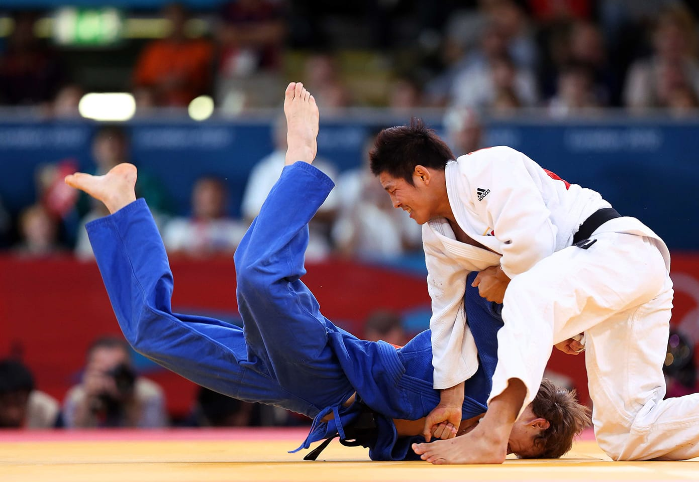

Judo

image sourced from: source
Judo is a form of unarmed-combat involving throws, takedowns, and grappling.
It is derived from jujitsu and intended to train the body and mind. And the style is iconic for its use of holds and leverage to unbalance the opponent.
Gear usually consists of
1 - Gi is the traditional way, but No-Gi styles of grappling exist for a more "street" style
Discipline
click for more | Type | Range |
|---|
| karate | Hand-To-Hand Strikes | Mid |
|---|
| kendo | Bamboo-Stave | Long |
|---|
| judo | Hand-To-Hand Grappling | Close |
|---|